Har du spørgsmål i forbindelse med projektet kan du til enhver tid sende os en email på info@bigbangnaturfag.dk.
Styregruppen
-
- 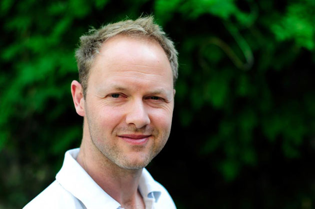

- Troels Petersen
- Lektor på Københavns Universitet
- Manden bag ideen arbejder til hverdag med partikelfysik på Niels Bohr Institutet og finder altid nye og inspirerende måder at få folk til at lytte efter
- 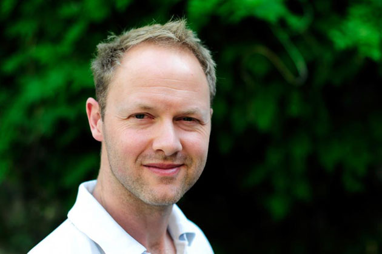
-
- 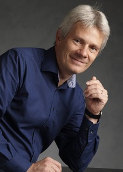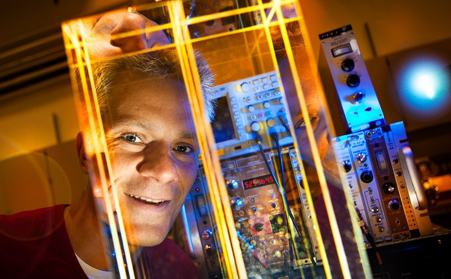
- Ulrik Uggerhøj
- Professor på Aarhus Universitet
- Projektmedejer ansvarlig for partikel fysik på AAU, som stadig har et ægte partikelfysik laboratorium i kælderen
-
- 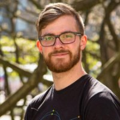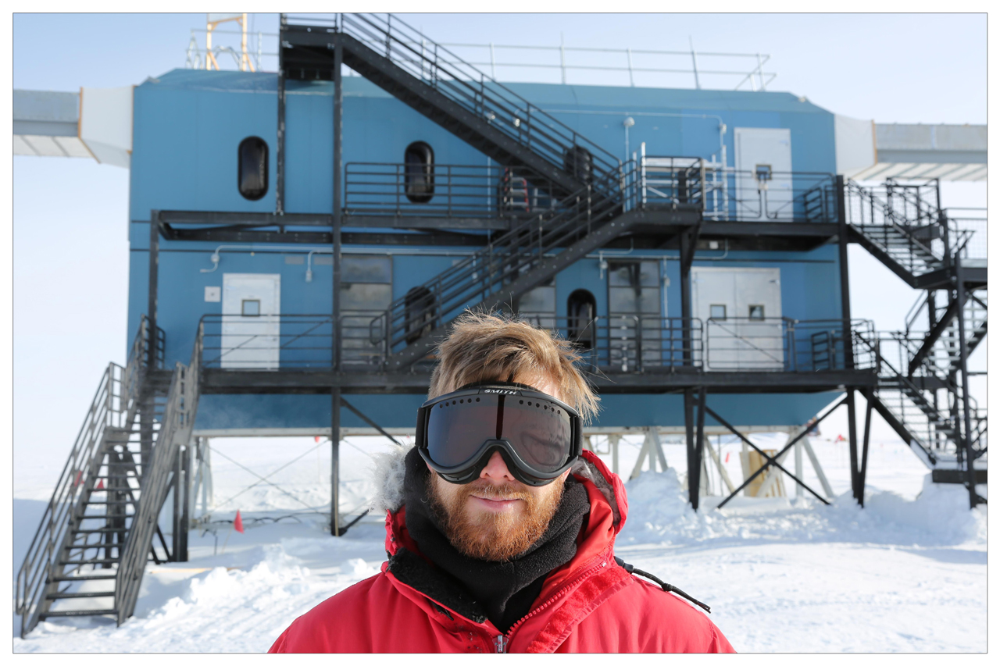
- Morten Medici
- Projektleder
- Ansvarlig for at projektet bliver ført ud i verden så godt som overhovedet muligt. Har en baggrund i astro- og partikelfysik med analyse af data fra neutrino experimentet IceCube på Sydpolen.
-
- 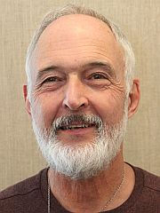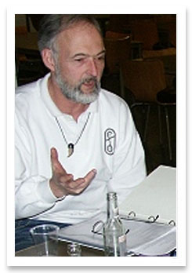
- Erland Andersen
- Faglig og Fagdidaktisk konsulent
- Mange års erfaring med undervisning i folkeskolen resulterer i en endeløs række af relevante ideer og gode historier, og er altid klar med en bedre forklaring af naturvidenskabelige fænomener.
-
- 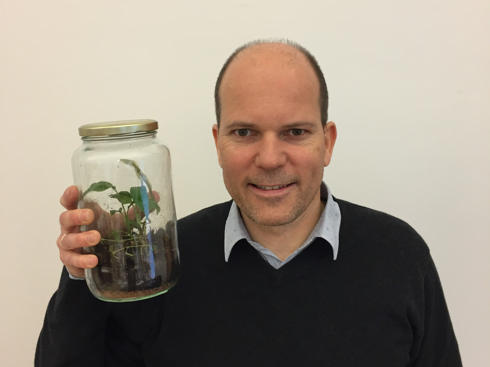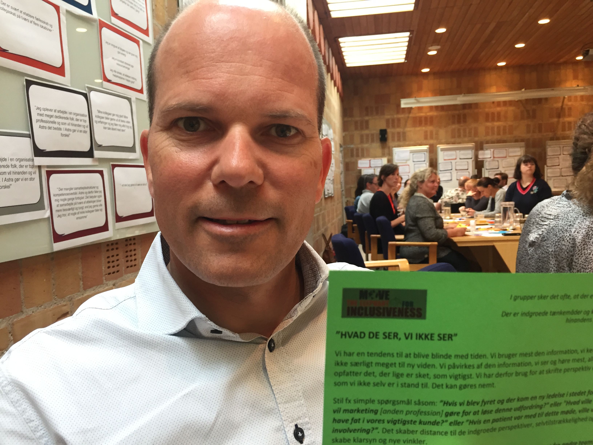
- Lars Volf Jensen
- ASTRA konsulent
- Ansvarlig for det naturfagsdidaktisk overblik og udførsel af særligt materiale og workshop 1, og stiller alle de svære spørgsmål på det rette tidspunkt.
-
- 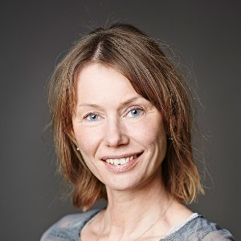
- Nana Quistgaard
- ASTRA konsulent
- Hovedkontakt hos ASTRA for særligt workshop 2, ansvarlig for den eksterne evaluering af det samlede projekt, og bidrager med en fantastisk sans for planlægning.
Studentermedhjælp
Derudover har vi haft fantastisk hjælp fra de studerende på både Københavns og Aarhus Universitet, noteret nedenfor i alfabetisk rækkefølge:
- Karl-Emil Bondgård
- Sofie Helene Bruun
- Jens Ole Christensen
- Ditte Marie Hjort-Jensen
- Simon Jensen
- Maria Stein Jørgensen
- Frederik Leerhøi
- Anine Maria Lütt
- Anders Lund
- Christian Flohr Nielsen
- Dorte Thrige Plauborg
- Rand Sawa Tuma
- Jophiel Nyman Wiis
- Isabella Østerlund
Stor støtte fra ansatte ved begge universiteter
Sidst, men ikke mindst, skylder vi en stor tak til det videnskabelige og tekniske personale på Københavns og Aarhus Universitet, som altid har været behjælpelig med vidensdeling, sparring, diskussioner og teknisk hjælp.